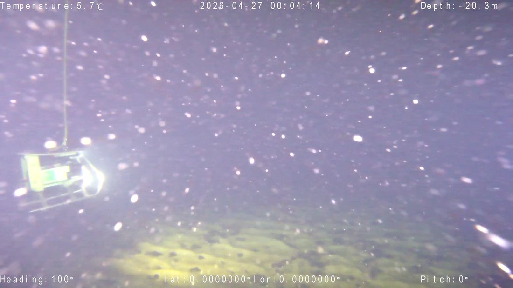
Multi-system data acquisition
ROV, tow camera, BRUV300 stereo camera and static stereo/360° camera complexes deployed across stations — day and night, calm to turbid conditions.
SCHUFI Project · University of Rostock · Institute of Biosciences, Aquatic Ecology
Underwater imaging & automated fish detection — from cruise-collected video in the Adlergrund to scalable, image-based biodiversity observation.
Conventional fish monitoring in marine protected waters relies largely on capture-based sampling, which can disturb organisms and habitats. The SCHUFI project investigates non-invasive methods — eDNA, plankton sampling, isotope testing, and imaging — to observe fish in their natural environments.
Our work focuses on the imaging approach: systematically recording fish in their natural habitats in the Adlergrund and Naturschutzgebiet Pommersche Bucht–Rönnebank (German Baltic Sea MPAs), assessing image quality under real Baltic conditions, and evaluating how far automated fish detection can be applied to this imagery — laying the foundation for scalable, image-based biodiversity monitoring.
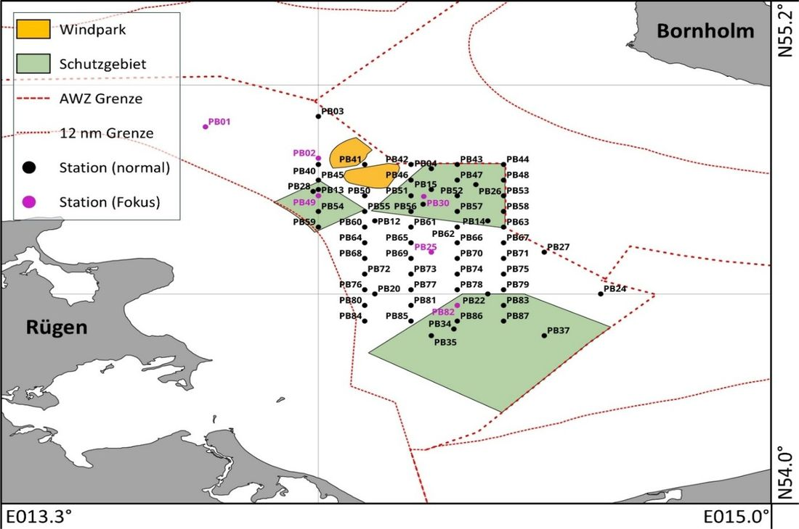
So far we have carried out four research cruises to the Adlergrund shoal area. One cruise was conducted with the GEOMAR Helmholtz Centre for Ocean Research Kiel aboard RV Alkor; three further campaigns followed in April, July and September 2026 (April aboard RV Prince Madog, 20.–27.04.2026), deploying multiple camera systems across stations at depths of roughly 1–30 m, varying sampling frequency, time of day and lighting conditions.

ROV, tow camera, BRUV300 stereo camera and static stereo/360° camera complexes deployed across stations — day and night, calm to turbid conditions.
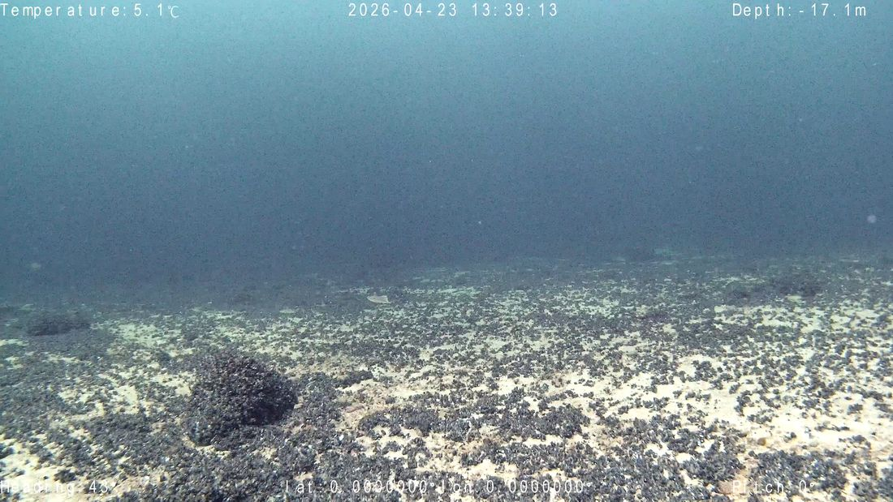
Clear days, dawn/night deployments, white-balance drift, marine snow and decolouration — deliberately sampled to understand what imagery automated analysis can cope with.
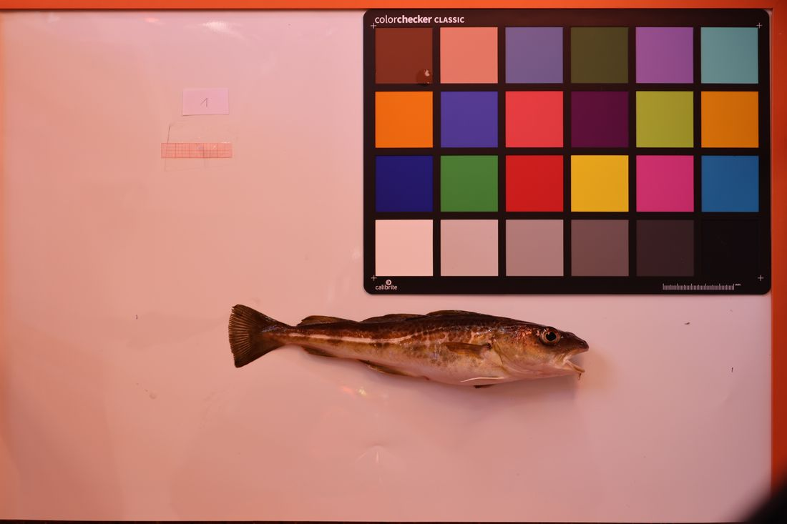
Reference images of key species (cod, scorpionfish, flounder…) and expert-verified species traits (shape, size, mobility, water-column position, activity patterns …) anchor the analysis.
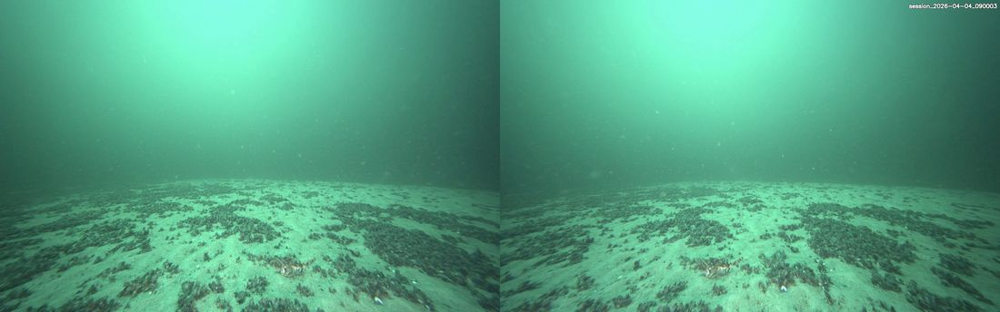
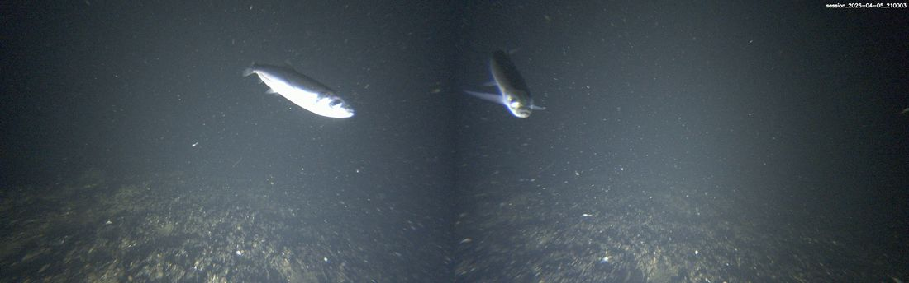
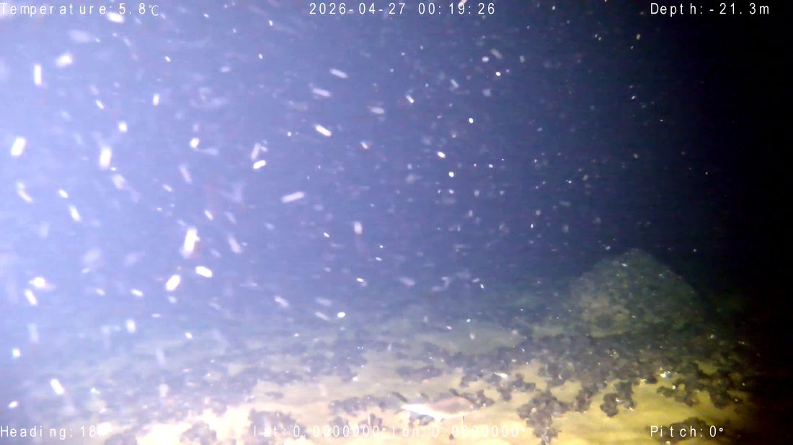
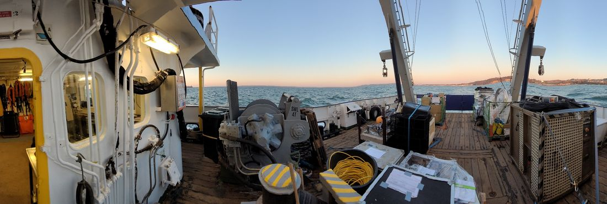
Five complementary systems — dynamic vs. static, mono vs. stereo — each with different strengths in water-column position, deployment time, illumination and species accessibility.
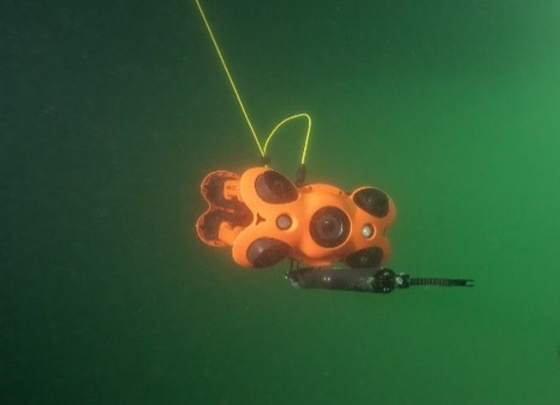
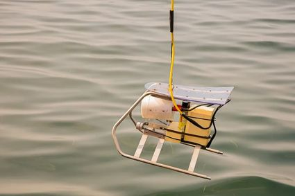
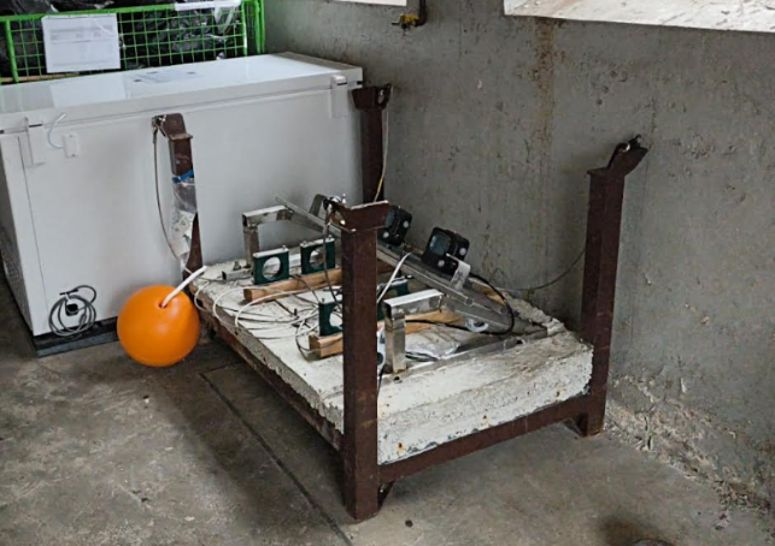
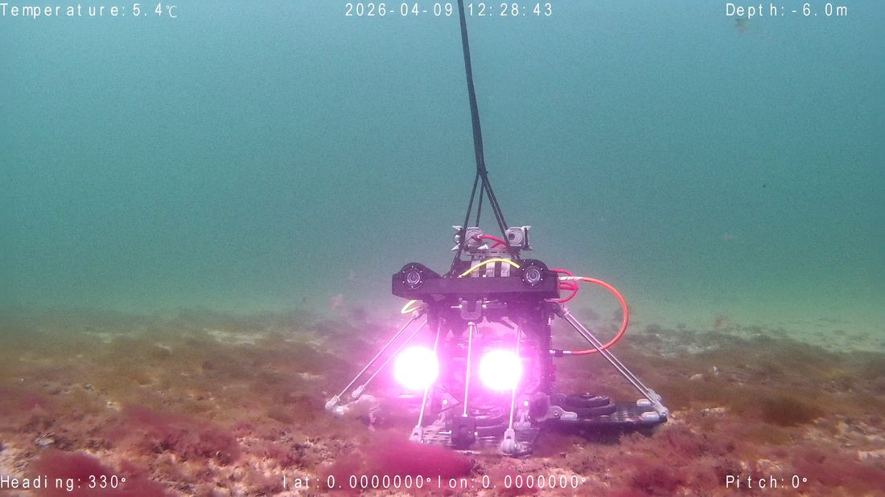
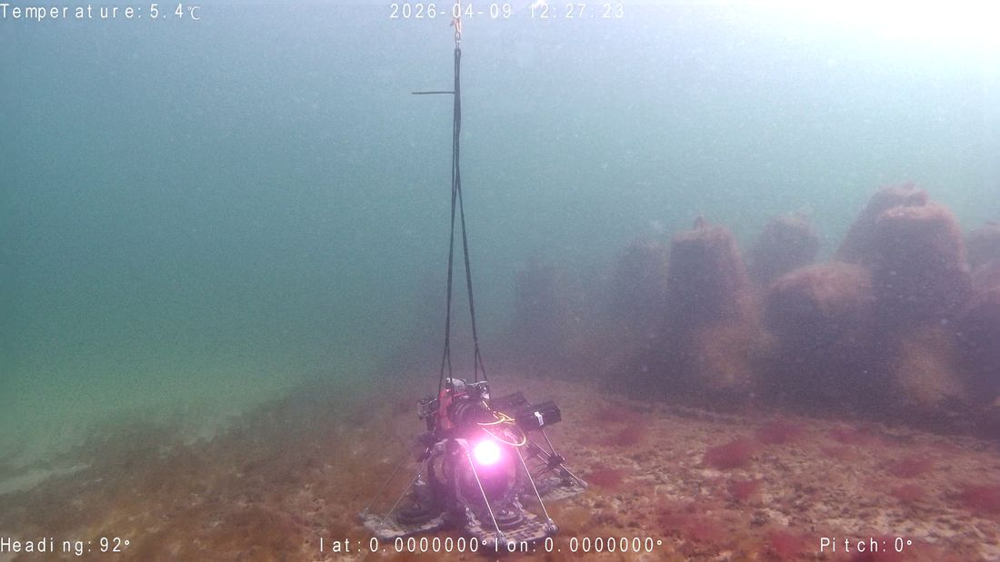
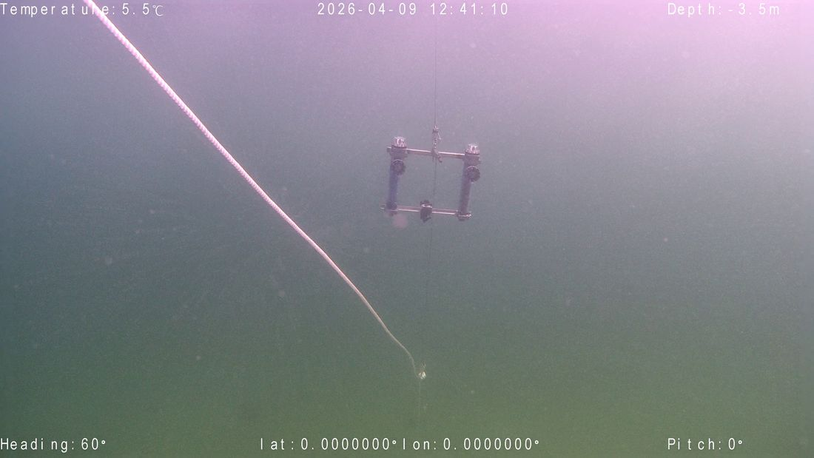
Selecting stations where species of interest (esp. benthic/pelagic species) and terrain — mussels, rocks, sand — make imaging worthwhile.
Camera types matched to questions: stereo for size/depth, ROV/drone for mobility and coverage, static cameras for long-duration sampling.
Research data management: metadata for every deployment event, protocols and structured archiving of ~10 000 images (imaging lead: Dheeraj Tippani).
Video/image segmentation and per-image quality scoring (underwater image quality metrics) to cut manual screening cost.
Pretrained YOLO / RCNN / DETR family detectors evaluated on genuine Adlergrund imagery — e.g. a pretrained FishNet on our ROV drone footage.
Detection is solvable; species-level classification of Baltic species is the hard part — no benchmark dataset covers them.
Underwater stereo photogrammetry (with underwater-specific calibration) → per-species size distributions.
First tests of pretrained detectors on our own imagery illustrate exactly the gap that motivates this project: in these frames fish are present but remain undetected — not for lack of data, but because of the conditions real Baltic Sea videos are made of.
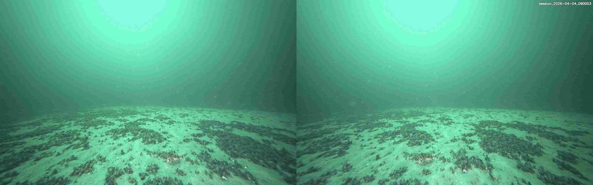
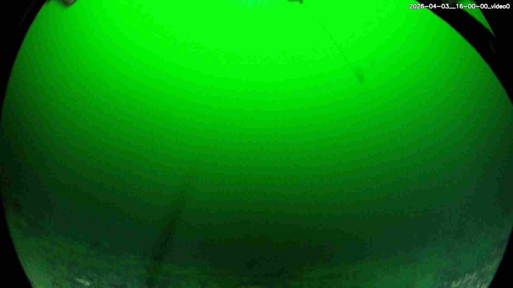
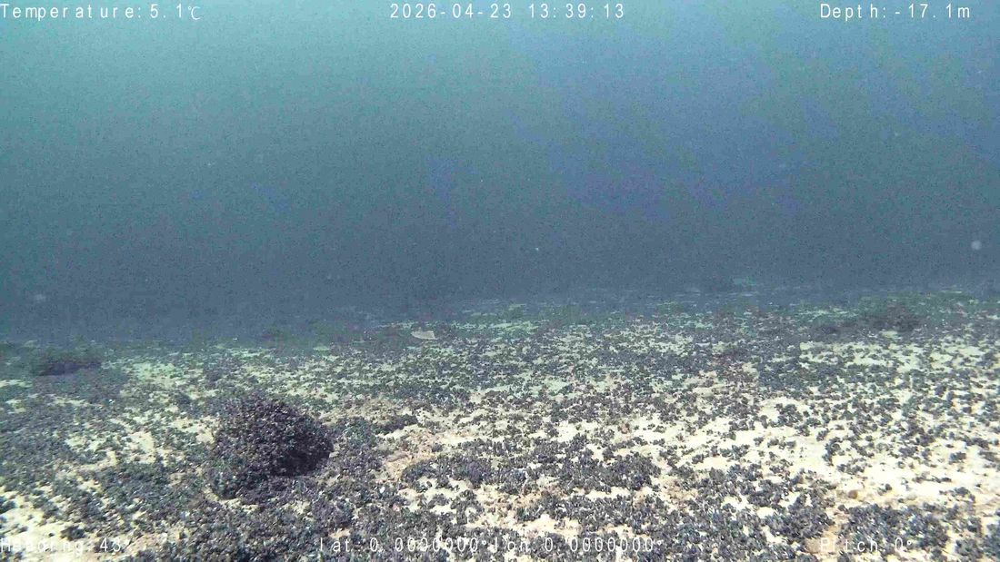
YOLO/RCNN-family models reach 90–99% accuracy on benchmark datasets, but performance degrades sharply on uncontrolled, real-world ocean footage (occlusion, turbidity, camouflage).
DeepFish, SEAMAPD21, FRGT, Fish4Knowledge, FishDet-M (13 unified datasets), OzFish and others exceed 100 000 annotated images — yet zero coverage of the Baltic and of non-commercial species.
Fish size estimation from wild imagery is understudied, data-acquisition methods are poorly documented, and Baltic benthic/pelagic species — especially non-commercial ones — are missing from benchmarks. Building that ground truth is a core task of our cruises.
Fish detection on Adlergrund footage is the first tractable milestone; beyond that, the focus shifts from scaled manual annotation toward automation and new technology:
Camera systems vs. fish species: an expert-verified trait framework (ten parameters) combining fish characteristics with camera competency of the deployed systems, analysed with logical matching + principal-component analysis on Prince Madog campaign data (2026).
Zero-shot clustering of wild fish images with vision transformers (start Nov 2026): applying the DINOv3 embedding + clustering pipeline of Markoff, Bengtson & Ørsted (2026) to open-source fish datasets, then embedding SCHUFI's Baltic imagery in the same space. Nov 2026 → Mar 2027 · supervisors: Prof. Dr. H. Theisel (OVGU Magdeburg), Dr. V. Fischbach & Dheeraj Tippani (Univ. Rostock).
Poster: Non-invasive Fish Monitoring in Baltic Sea Marine Protected Areas: Underwater Imaging and Automated Fish Detection — Tippani & Fischbach, University of Rostock, November 2026. You're reading the companion page for the poster. 👋